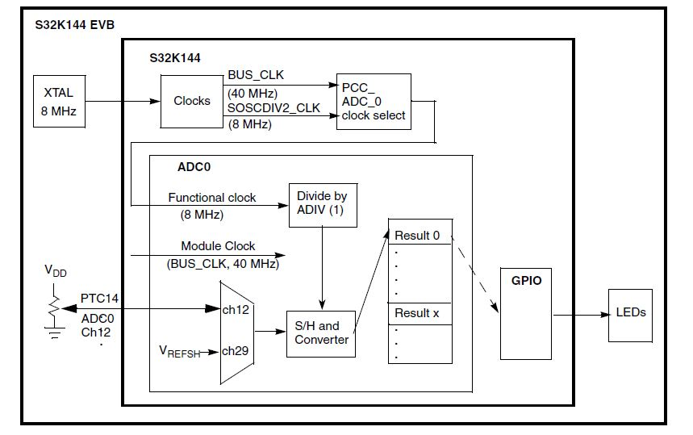

Description
The ADC is initialized to convert two channels using software triggers that are configured for one-shot conversions.
Each conversion requires its own software trigger.
One channel connects to a potentiometer on the EVB the other to VREFSH. The results are scaled 0 to 5000 mV.
On the evaluation board, three LEDs are used to indicate the conversion result range per the following table.
| Scaled conversion result | LED Illuminated |
| 3750 - 5000 mV | Red |
| 2500 - 3750 mV | Green |
| 1250 - 2500 mV | Blue |
| 0 to 1250 mV | None |

Design
ADC calibration is not included in this simple example. Hence the results can be lower than the specified
accuracy. The steps to initialize the calibration mechanism are found in the Calibration function section of
the ADC chapter of the reference manual.
- Disable watchdog
- System clocks: Initialize SOSC for 8 MHz, sysclk for 80 MHz, RUN mode for 80 MHz
- Initialize port pins:
- Initialize ADC:
- Select SOSCDIV2_CLK for functional clock and enable it to module
- Disable module and disable interrupt requests from module (reset default state)
- Configure ADC for 12-bit conversions using SOSCDIV2_CLK, divided by 1
- Configure sample time of 13 ADCK clock cycles (reset default value)
- Select software trigger for conversions, no compare functions, no DMA and use default voltage
reference pins - external pins VREFH and VREFL. (reset default value)
- Disable continuous conversions (so there is one conversion per software trigger), disable
hardware averaging, disable calibration sequence start up
Loop:
- Issue ADC conversion command for the channel that is connected to the potentiometer on
the NXP evaluation board. (Use ADC_SC1[0] for software triggers.)
- Wait for conversion complete flag. When conversion is complete:
- Read result and scale to 0 to 5000 mV (Result is in ADC_R[0] for all software triggers.)
- Illuminate LED per voltage range
- Issue ADC conversion command to read channel 29, ADC high reference voltage (Use
ADC_SC1[0] for software triggers.)
- Wait for conversion complete flag. When conversion is complete:
- Read result and scale to 0 to 5000 mV (Result is in ADC_R[0] for all software triggers.)
Pins definitions:
| Function | S32K116 | S32K118 | S32K142 | S32K144 | S32K146 | S32K148 |
| BLUE_LED | PTE8 | PTE8 | PTD0 | PTD0 | PTD0 | PTE23 |
| RED_LED | PTD16 | PTD16 | PTD15 | PTD15 | PTD15 | PTE21 |
| GREEN_LED | PTD15 | PTD15 | PTD16 | PTD16 | PTD16 | PTE22 |
ADC Channel connected to Potentiometer:
| Board | Channel |
| S32K116 | AD3 |
| S32K118 | AD2 |
| S32K142 | AD12 |
| S32K144 | AD12 |
| S32K146 | AD12 |
| S32K148 | AD28 |
Driver Functions:
| Function | Driver |
| ADC_init | adc |
| ::ADC_init_HWTrigger | adc |
| ::convertAdcChan | adc |
| ::adc_complete | adc |
| ::read_adc_chx | adc |
main.c
#include "device_registers.h"
#define PTD0 (0)
#define PTD15 (15)
#define PTD16 (16)
{
PCC->PCCn[PCC_PORTD_INDEX ]|=PCC_PCCn_CGC_MASK;
PORTD->PCR[
PTD0] = PORT_PCR_MUX(1);
PORTD->PCR[
PTD15] = PORT_PCR_MUX(1);
PORTD->PCR[
PTD16] = PORT_PCR_MUX(1);
}
{
WDOG->CNT=0xD928C520;
WDOG->TOVAL=0x0000FFFF;
WDOG->CS = 0x00002100;
}
{
uint32_t adcResultInMv=0;
for(;;)
{
convertAdcChan(12);
while(adc_complete()==0){}
adcResultInMv = read_adc_chx();
if (adcResultInMv > 3750) {
}
else if (adcResultInMv > 2500) {
}
else if (adcResultInMv >1250) {
}
else {
}
convertAdcChan(29);
while(adc_complete()==0){}
adcResultInMv = read_adc_chx();
}
}
 1.8.15
1.8.15